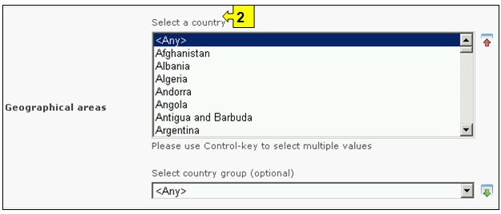
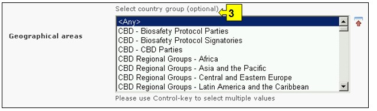
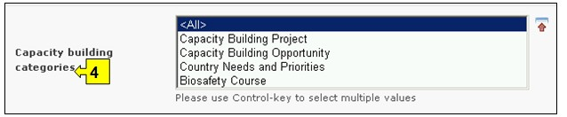
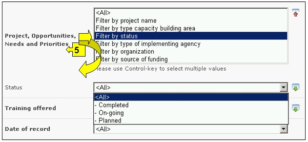
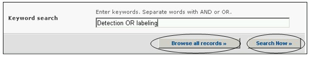
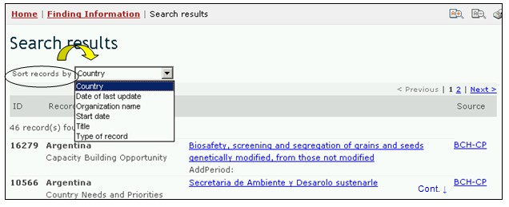

Ссылка: http://bch.cbd.int/database/activities/
В соответствии со Статьей 22 Протокола Стороны сотрудничают в развитии и/или укреплении людских ресурсов и организационного потенциала в целях эффективного осуществления Протокола. Используя МПБ, Стороны и другие заинтересованные лица могут получить информацию о возможностях по созданию потенциала и иной помощи в целях реализации Протокола. Кроме того, правительства могут предоставлять информацию в Центральный портал МПБ о своих потребностях и приоритетах для создания потенциала.
Поиск информации о создании потенциала можно осуществлять, используя соответствующие ссылки в выпадающем меню раздела навигационной панели Finding Information (Поиск информации), или в меню в левой части страницы Поиск информации, или используя ссылку Создание потенциала в тексте страницы.

Рисунок 68
На странице Поиска информации о создании потенциала можно осуществлять поиск:
1) проектов по созданию потенциала,
2) возможностей по созданию потенциала,
3) потребностей и приоритетов стран,
4) курсов по биобезопасности.
На странице Поиска информации о создании потенциала предусмотрены восемь полей с критериями уточнения поиска. Каждое из полей содержит выпадающее меню, позволяющее выбрать необходимый критерий. По умолчанию (если критерий не выбран) используется первый пункт меню. Справа от полей выбора критериев расположены кнопки, позволяющие перейти в режим выбора нескольких критериев. В этом режиме возможно добавление критериев поиска, путем выбора необходимых критериев при удерживании нажатой кнопки Ctrl (Control) на клавиатуре.
 .
.
Рисунок 69
Меню поля 1 [Вид помощи] позволяет сузить круг поиска, выбрав страны или регионы, запросившие или предоставляющие помощь
Рисунок 70
В меню Географическое положение в поле 2 [Выберите страну] приведен список всех стран, позволяющий выбрать для поиска одну или несколько необходимых стран.

Рисунок 71
В меню Географическое положение в поле 3 [Выберите группу стран] приведен список групп стран, позволяющий выбрать для поиска одну или несколько необходимых групп. Список групп стран содержит все основные географические и политические группы, что позволяет осуществлять поиск сведений, предоставленных конкретной группой или группами стран.

Рисунок 72
Меню поля 4 [Категория создания потенциала] позволяет сузить круг поиска до отдельных категорий создания потенциала, а именно: (1) проектов по созданию потенциала, (2) возможностей по созданию потенциала, (3) потребностей и приоритетов стран и (4) курсов по биобезопасности.

Рисунок 73
Меню Проект, возможности, потребности и приоритеты в поле 5 позволяет использовать фильтры по различным аспектам мероприятий по созданию потенциала, что позволяет сузить круг поиска до мероприятий, отвечающим выбранным критериям поиска. Возможно использование следующих фильтров: (1) название проекта, (2) область создания потенциала, (3) состояние проекта, (4) исполнительное агентство, (4) организация и (5) источник финансирования.
Выбор одного или нескольких фильтров в выпадающем меню открывает соответствующие дополнительные поля, которые содержат свои выпадающие меню с вариантами, связанными с выбранными фильтрами. Выбрать несколько вариантов фильтра можно, использую клавишу Ctrl (Control), т.е. путем выбора необходимых вариантов в меню при удерживании нажатой кнопки Ctrl (Control) на клавиатуре

Рисунок 74
Меню поля 6 позволяет использовать фильтры по тематической области и(или) по типу аккредитации, что позволяет сузить круг поиска до мероприятий, отвечающим выбранным критериям поиска.
Выбор одного или обоих фильтров в выпадающем меню открывает соответствующие дополнительные поля, которые содержат свои выпадающие меню с вариантами, связанными с выбранными фильтрами. Выбрать несколько вариантов фильтра можно, использую клавишу Ctrl (Control), т.е. путем выбора необходимых вариантов в меню при удерживании нажатой кнопки Ctrl (Control) на клавиатуре
Рисунок 75
Меню поля 7 [Дата предоставления сведений] позволяет сузить круг поиска сведений в соответствии с датой их предоставления МПБ. Выпадающее меню содержит ряд временных периодов для оптимизации поиска сведений, предоставленных за определенное время (например, за последний день, за последний месяц, за последний год и т.д.).

Рисунок 76
Поле 8 [Ключевые слова] предоставляет возможность использования ключевых слов для сужения круга поиска. Пользователь может использовать стандартный синтаксис (AND/OR) для комбинации ключевых слов или корневых частей слов (например, «Import OR Export», «координ* AND центр»). В результате поиска с использованием ключевых слов будут представлены только сведения, содержащие конкретные ключевые слова, но не их синонимы (например, в результате поиска с использованием ключевого слова «Maize» будут представлены сведения, содержащие только это слово, и не представлены, содержащие его синонимы «Corn» и «Zea mays»)

Рисунок 77
На странице поиска расположены три кнопки, инициирующие процедуру поиска. Кнопки Search Now (Искать), расположенные вверху и внизу формы поиска, позволяют осуществить поиск, используя выбранные критерии в полях функции поиска. Результаты поиска будут расположены в алфавитном порядке по названию страны (по умолчанию). Кнопка Browse all records (Просмотреть все записи) дает возможность просмотреть все сведения этой базы данных.

Рисунок 78
Страницы Результатов поиска имеют функцию сортировки, расположенную вверху страницы, которая может быть использована для сортировки результатов в соответствии с параметрами, имеющими отношение к данной категории информации. Необходимо отметить, что параметры сортировки результатов изменяются в зависимости от критериев поиска.

Рисунок 79
Пример. Предположим, что необходимо найти, какие проекты по созданию потенциала завершились в странах Африки. Для этого необходимо выбрать Африка – Африканский Союз в поле Выбрать группу стран в меню Географические зоны, указать проект по созданию потенциала в поле Категории создания потенциала и Фильтровать по состоянию в поле Проект, возможности, потребности и приоритеты. Выбор данного фильтра открывает дополнительное поле Состояние, в котором необходимо выбрать завершенные. После нажатия кнопки Search Now (Искать) будут представлены результаты поиска в алфавитном порядке по названию стран. Подробную информацию о каждом мероприятии можно просмотреть, используя ссылку в названии проекта.

Рисунок 80
Рисунок 81